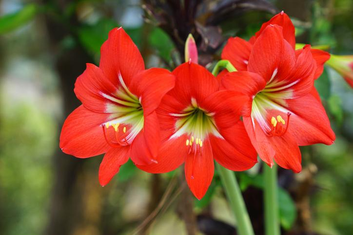
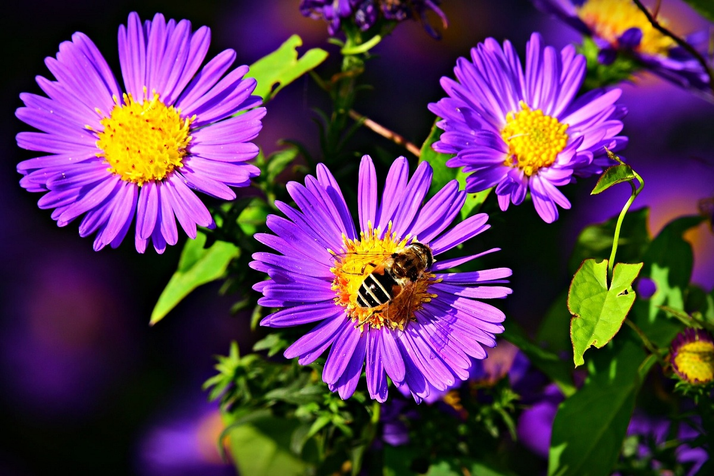
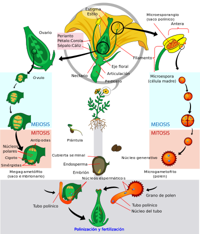

Descripcion
Las angiospermas (nombre científico Angiospermae, del griego:
αγγειον, angíon- 'vaso, ánfora', y σπέρμα, sperma, 'semilla';
sinónimo del taxón Magnoliophyta sensu Cronquist), comúnmente
llamadas plantas con flores o plantas florales, son las plantas
con semilla cuyas flores tienen verticilos o espirales ordenados
de sépalos, pétalos, estambres y carpelos; los carpelos encierran
a los óvulos y reciben el polen en su superficie estigmática. Esto
las diferencia de las gimnospermas, que reciben el polen
directamente en el óvulo y que al madurar el fruto se encuentran
sus "semillas envasadas", es decir la semilla madura se encuentra
encerrada en el fruto (como antes el óvulo en el carpelo),
carácter distintivo que le da el nombre al grupo. En algunos textos
se considera que únicamente las angiospermas son plantas con
flores, ya que la floración de las otras espermatofitas
(las gimnospermas) es diferente. El nombre significa
semilla vestida, en alusión a la presencia de frutos. En esto
difieren de las gimnospermas.

Otros caracteres morfológicos
Otras características morfológicas son:
Muchas angiospermas poseen vasos xilemáticos además de traqueidas, carácter derivado dentro del grupo. En los vasos, el agua puede fluir sin necesidad de atravesar una membrana, lo que los vuelve muy eficientes en el transporte de fluidos dentro del esporófito pero probablemente también más propensos a recibir daño (en especial por embolias de aire) cuando están sujetos a estrés hídrico.
El floema de las angiospermas difiere del de todas las demás plantas en que los elementos del tubo criboso (que son células vivas pero sin núcleo, encargadas del transporte de azúcares) están acompañadas por una o más células acompañantes, que nacen de la misma célula madre que el elemento.

Ciclo de vida de las angiospermas y morfología de la flor
Las angiospermas pueden definirse como traqueofitas con las siguientes características:
Como en todas las traqueofitas, hay dos generaciones multicelulares alternadas, llamadas
gametófito y esporófito, siendo el gametófito taloide, y el esporófito organizado en tejidos y
órganos. Como en todas las espermatofitas, la alternancia de generaciones gametofítica y
esporofítica se da en forma enmascarada, ya que el gametófito se desarrolla por completo dentro
de las estructuras del esporófito.
Como en todas las traqueofitas, el esporófito es un "cormo" (con sistema vascular, raíz y vástago).
Como en todas las eufilofitas, el vástago del esporófito crece gracias a su meristema apical, y se
ramifica como un tallo principal con ramas laterales, y además tiene hojas ("eufilos").
Como todas las espermatofitas, tienen un ciclo de vida heterospórico y el gametófito se desarrolla
de forma endospórica (esto quiere decir que el esporófito da esporas femeninas dentro de las cuales
se desarrolla el gametófito femenino, y esporas masculinas dentro de las cuales se desarrolla el
gametófito masculino), los esporangios nacen siempre en las hojas ("hojas fértiles", los estambres
y los carpelos), y las hojas fértiles siempre están en una estructura llamada flor (aquí definida
como una rama de crecimiento limitado portadora de hojas fértiles). Como en todas las espermatofitas,
el megasporangio (presente en el carpelo) produce una única megaspora que nunca lo abandona
(megasporangio + megaspora + gametófito femenino + gameta femenina = óvulo). Como en todas las
espermatofitas, el microsporangio (o saco polínico, presente en el estambre) produce en su interior
"granos de polen" (microsporas con un único gametófito masculino dentro) que son liberados al
exterior a la espera de que los agentes externos los transporten hasta las vecindades del óvulo.
Como en todas las espermatofitas, el grano de polen al ser estimulado emite un tubo polínico para
fecundar al óvulo.
La flor de angiosperma se caracteriza por poseer un pedicelo que nace en la axila de una bráctea, que
remata en un receptáculo portador de los verticilos o espirales de sépalos, pétalos, estambres y
carpelos en ese orden. Los sépalos y pétalos son hojas estériles no presentes en el resto de las
espermatofitas. Por lo general los sépalos son verdes y fotosintéticos, y tienen una función de
protección del capullo cuando la flor todavía está en formación, mientras que los pétalos son vistosos
y coloridos, y tienen una función de atracción de los agentes polinizadores, por lo general animales.
Por lo general los estambres constan de un filamento y una antera, y la antera posee 4 microsporangios
(sacos polínicos) unidos por tejido conectivo. El gametófito masculino está reducido a tres células
(dos son espermáticas y la tercera forma el tubo polínico). Por lo general los carpelos son hojas
cerradas que mantienen a los óvulos dentro, se diferencian en una superficie preparada para recibir
al grano de polen llamada estigma, un cuello (estilo) preparado para hacer crecer al tubo polínico
hacia los óvulos, y una cámara que alberga a los óvulos llamada ovario. El gametófito femenino
("saco embrionario") en general está reducido a siete células. Los óvulos están unidos a la pared del
ovario mediante un tejido a veces llamado "placenta", y la forma de unión (o "tipos de placentación")
es útil para la determinación de las familias. No hay que confundir esta placentación con la placenta
que une al embrión con el gametófito femenino (característica de todas las embriofitas).
En las angiospermas se produce el fenómeno de doble fecundación. Esto quiere decir que los dos núcleos
espermáticos que libera el grano de polen fecundan uno al óvulo (produciendo el cigoto que dará el
futuro esporófito adulto) y el otro a una célula diploide, produciendo un tejido 3n (triploide) de
reserva llamado endosperma.